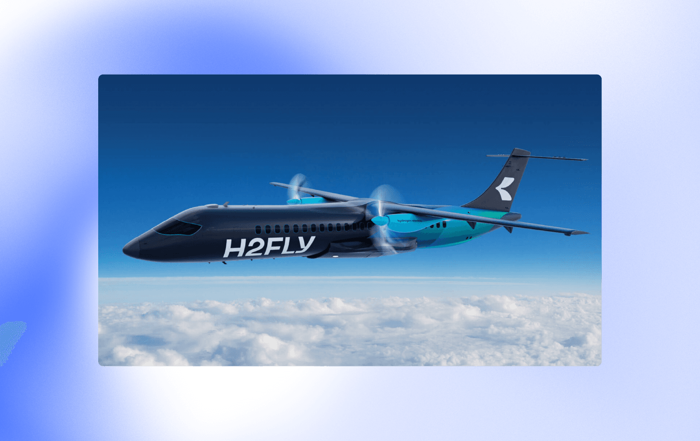

Тренд на экологичность не прошёл и мимо авиации. Из желания немецкого пилота Йозефа Калло сделать авиаперелёты более «чистыми» родилась компания H2FLY и её первая разработка — четырёхместный электросамолёт HY4, работающий на жидком водороде. В сентябре самолёт совершил четыре тестовых рейса над Словенией, один из которых длился более трёх часов. За это время обычный самолёт выделяет несколько тонн углекислого газа, а отходы от водородного двигателя HY4 состоят только из водяного пара и тёплого воздуха. Теперь H2FLY планирует создать пассажирское судно на 40 человек.
